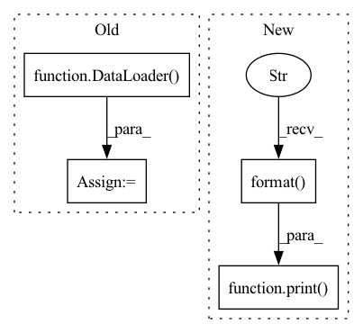

Pattern ID :951

Before Change
for img_path in img_paths:
new_train.append((img_path, pid, camid))
trainloader = DataLoader(
ImageDataset(new_train, transform=transform_train),
batch_size=args.train_batch, shuffle=True, num_workers=args.workers,
pin_memory=pin_memory, drop_last=True,
)
queryloader = DataLoader(
VideoDataset(dataset.query, seq_len=args.seq_len, sample="evenly", transform=transform_test),
batch_size=args.test_batch, shuffle=False, num_workers=args.workers,
After Change
print("Evaluate only")
for name in args.target:
print("Evaluating {} ...".format(name))
queryloader = testloader_dict[name]["query"]
galleryloader = testloader_dict[name]["gallery"]
distmat = test(model, queryloader, galleryloader, args.pool, use_gpu, return_distmat=True)
In pattern: SUPERPATTERN
Frequency: 4
Non-data size: 4
Instances
Fragment ID: 4519244
Project Name: vlsomers/bpbreid
Commit Name: 2ecd8e57044c13adc4c105b2d58aa07697384590
Time: 2018-11-07
Author: k.zhou@qmul.ac.uk
File Name: train_vidreid_xent.py
M Class Name: AnonimousClass
N Class Name: AnonimousClass
M Method Name: main(0)
N Method Name: main(0)
M Parent Class:
N Parent Class:
M File Name: train_vidreid_xent.py
N File Name: train_vidreid_xent.py
M Start Line: 125
M End Line: 247
N Start Line: 58
N End Line: 163
'>
Before Change
train_labeled_loader = DataLoader(
train_labeled_dataset, batch_size=args.batch_size[0], shuffle=(train_labeled_sampler is None),
num_workers=args.workers, pin_memory=True, sampler=train_labeled_sampler)
train_unlabeled_loader = DataLoader(
train_unlabeled_dataset, batch_size=args.batch_size[0], shuffle=(train_unlabeled_sampler is None),
num_workers=args.workers, pin_memory=True, sampler=train_unlabeled_sampler)
if args.phase == "test":
// resume from the latest checkpoint
checkpoint = torch.load(logger.get_checkpoint_path("best"), map_location="cpu")
After Change
test_metric = tmp_test_metric
shutil.copy(logger.get_checkpoint_path("latest"), logger.get_checkpoint_path("best"))
print("best val performance: {:.3f}".format(best_val_metric))
print("test performance: {:.3f}".format(test_metric))
logger.close()
writer.close()
'>
Fragment ID: 4519253
Project Name: thuml/transfer-learning-library
Commit Name: a506d6956e5d8734b2bb14edda8df7eeac8d0896
Time: 2022-03-17
Author: 3236488847@qq.com
File Name: examples/domain_adaptation/wilds_image_regression/erm.py
M Class Name: AnonimousClass
N Class Name: AnonimousClass
M Method Name: main(1)
N Method Name: main(1)
M Parent Class:
N Parent Class:
M File Name: examples/domain_adaptation/wilds_image_regression/erm.py
N File Name: examples/domain_adaptation/wilds_image_regression/erm.py
M Start Line: 84
M End Line: 177
N Start Line: 84
N End Line: 168
'>
Before Change
train_labeled_dataset, batch_size=args.batch_size[0], shuffle=(train_labeled_sampler is None),
num_workers=args.workers, pin_memory=True, sampler=train_labeled_sampler
)
train_unlabeled_loader = DataLoader(
train_unlabeled_dataset, batch_size=args.batch_size[1], shuffle=(train_labeled_sampler is None),
num_workers=args.workers, pin_memory=True, sampler=train_unlabeled_sampler
)
no_decay = ["bias", "LayerNorm.weight"]
params = [
{"params": [p for n, p in model.named_parameters() if not any(nd in n for nd in no_decay)],
After Change
if is_best:
test_metric = tmp_test_metric
shutil.copy(logger.get_checkpoint_path("latest"), logger.get_checkpoint_path("best"))
print("best val performance: {:.3f}".format(best_val_metric))
print("test performance: {:.3f}".format(test_metric))
logger.close()
writer.close()
'>
Fragment ID: 4519245
Project Name: thuml/transfer-learning-library
Commit Name: a506d6956e5d8734b2bb14edda8df7eeac8d0896
Time: 2022-03-17
Author: 3236488847@qq.com
File Name: examples/domain_adaptation/wilds_text/erm.py
M Class Name: AnonimousClass
N Class Name: AnonimousClass
M Method Name: main(1)
N Method Name: main(1)
M Parent Class:
N Parent Class:
M File Name: examples/domain_adaptation/wilds_text/erm.py
N File Name: examples/domain_adaptation/wilds_text/erm.py
M Start Line: 77
M End Line: 169
N Start Line: 34
N End Line: 162
'>
Before Change
pin_memory=pin_memory, drop_last=True,
)
queryloader = DataLoader(
ImageDataset(dataset.query, transform=transform_test),
batch_size=args.test_batch, shuffle=False, num_workers=args.workers,
pin_memory=pin_memory, drop_last=False,
)
galleryloader = DataLoader(
ImageDataset(dataset.gallery, transform=transform_test),
batch_size=args.test_batch, shuffle=False, num_workers=args.workers,
After Change
print("==> Test")
for name in args.target:
print("Evaluating {} ...".format(name))
queryloader = testloader_dict[name]["query"]
galleryloader = testloader_dict[name]["gallery"]
rank1 = test(model, queryloader, galleryloader, use_gpu)
'>
Fragment ID: 4519246
Project Name: vlsomers/bpbreid
Commit Name: a96dd6b91631f43e3706a3e5ba6a090939f13036
Time: 2018-11-05
Author: k.zhou@qmul.ac.uk
File Name: train_imgreid_xent_htri.py
M Class Name: AnonimousClass
N Class Name: AnonimousClass
M Method Name: main(0)
N Method Name: main(0)
M Parent Class:
N Parent Class:
M File Name: train_imgreid_xent_htri.py
N File Name: train_imgreid_xent_htri.py
M Start Line: 137
M End Line: 241
N Start Line: 134
N End Line: 224